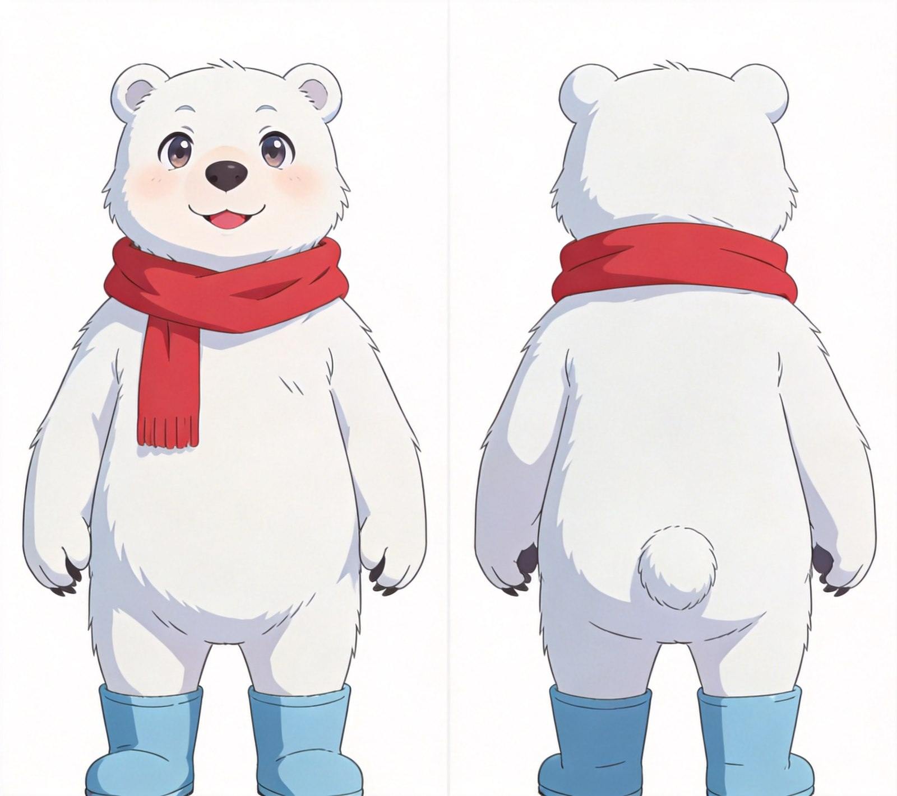
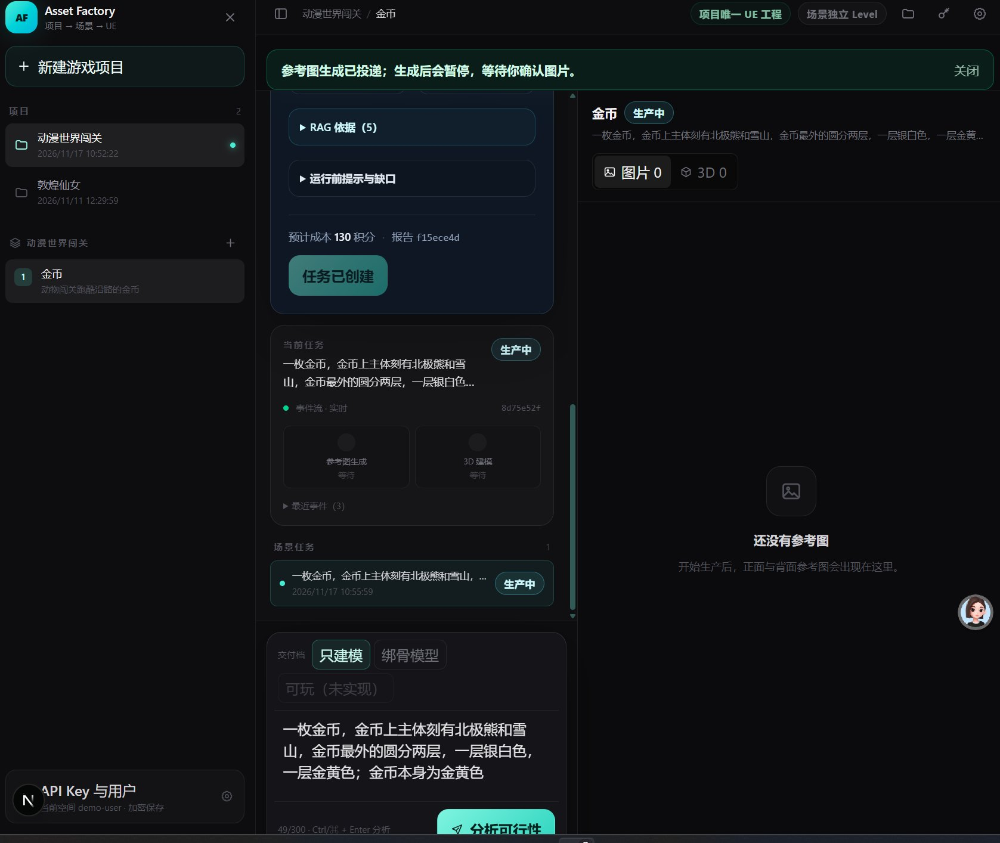
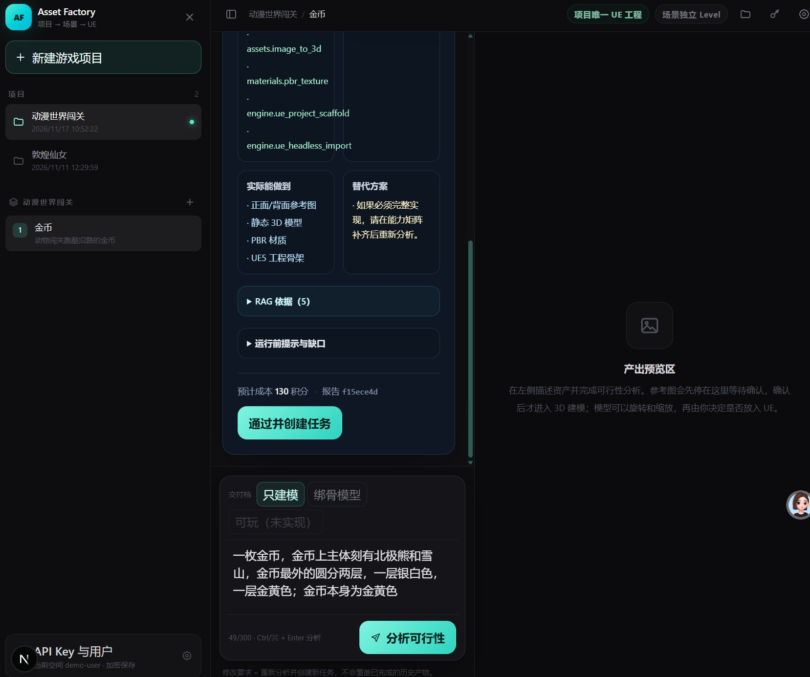
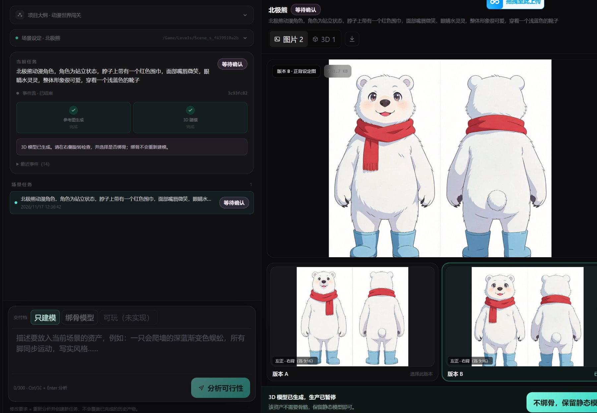
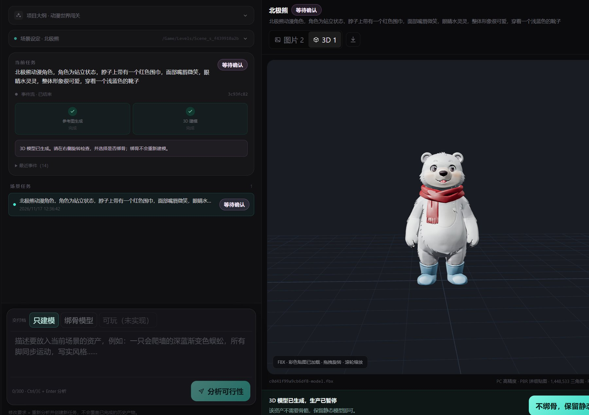
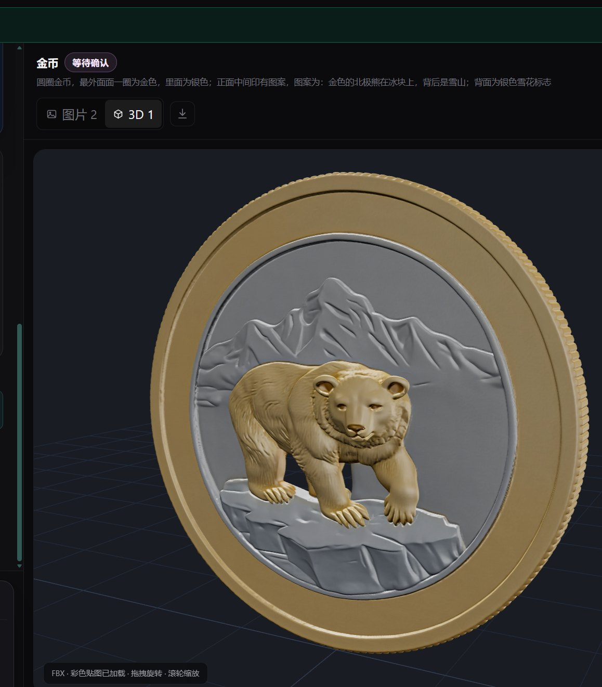

01BEFORE SPENDING
先判断，再生成。
可行性分析只读：意图解析、能力矩阵、RAG 与规则校验。分析阶段不调用生图、3D、绑骨或 UE。
A REAL PIPELINE · TOLD THROUGH ITS FAILURES
AI Game Asset Factory 不是一个“输入提示词，等待奇迹”的演示页。它先判断需求能不能做，再让用户在每一个扣费点前做决定，并把生成、检查、失败恢复和资产归档串成一条可复盘的生产链。

FRONT BACKTHE THESIS / 这个作品的真正命题
“一句话生成游戏资产”听起来像一个生成问题。真正做起来，它是一个边界、计费、状态与责任的问题。
用户可能要求一个会爬墙、每只脚都要贴地、在阳光下变化颜色的蜈蚣；也可能只是要一只带红围巾的北极熊。两者都不该被同一句“好的，正在生成”带过。
所以这个项目把分析、确认、图片、模型、绑骨、UE 导入拆成显式阶段。每一步都留下事实、产物和可恢复现场。页面里的互动不是装饰，它们对应真实的业务闸门。
可行性分析只读：意图解析、能力矩阵、RAG 与规则校验。分析阶段不调用生图、3D、绑骨或 UE。
A/B 设定图之后必须选版本；模型之后再次确认是否绑骨。用户选择“不建模”时，Tripo 不会被调用。
网络故障恢复只新增 model attempt，复用已有图片、版本选择与产物哈希，不重跑已经成功的图片阶段。
CAPABILITY GATE / 先判断
不是所有“一句话”都应该进入生产。这个环节把用户的想象拆成可验证能力，先告诉用户能做到什么，以及为什么另一些不能承诺。
“做一只会爬墙的蜈蚣。颜色是深蓝渐变，在太阳下会产生颜色变化；爬墙时所有脚都在动，身体要有真实的贴墙动态。”
点击下面能力标签，看判断如何变化。
如果用户只想要两张概念图，后面的模型、绑骨和 UE 都不应该发生。先分析可以避免用 token、积分和等待去验证一个本来就不该开始的任务。
WORKBENCH / 真实操作路径
这里不重画一个“完美界面”。下面直接使用运行中的工作台截图拆解一条任务：项目负责隔离，场景负责归档，需求先进入可行性分析，确认后才产生图片、模型和费用。


它把需求拆成主体、形态、材质、动作和引擎支持，再逐项映射到能力矩阵。无法承诺的部分会留成缺口，不会被悄悄包装成已实现。
分析阶段只读：生图、3D、绑骨和引擎导入都还没有发生。项目、场景和预计成本先落到同一份报告里，用户再决定是否创建任务。
同一项目下的场景可以并列存在；每条任务、每次失败和每份产物都保留自己的归属。
需求、报告、图片、模型和恢复记录沿同一个任务串联，刷新页面也不会丢失现场。
先看可行性和成本，再看 A/B 图，再看模型；每个扣费点都停在用户面前。
它只增加一个新的场景入口和归档域。之后在这里生成的图片、模型、失败记录都归到该场景，不会与另一个场景混在一起。
IMAGE REVIEW / 人工闸门
每个资产先生成 A/B 两版左右双联图：左边正面，右边背面。用户选完版本，系统才允许进入模型阶段；不选就不扣下一笔钱。
两版都完整展示正面与背面。没有中央长条裁图，左右各是一张全身视图。
等待你的决定。 图片阶段成功，但模型队列尚未启动。
COST IMPACT / 0
生成模型同时产出两个完整版本，给用户真实的视觉选择，而不是只展示一张“抽卡结果”。
左侧正面、右侧背面，保持全身比例。确认后由后端安全裁成两张参考图交给 Tripo。
选择“不建模”会直接结束任务并保留图片，不投递模型队列，也不会产生 Tripo 建模费用。
DELIVERY MODE / 交付档位
模型在远景全身视角里检查轮廓、颜色和 PBR 材质，再由用户选择静态交付、自动绑骨或停在这里。绑骨预检免费；只有确认可绑之后，才发起付费绑骨。

LIVE VIEW / FAR
模型检查点不假设每个需求都是人形。北极熊按角色处理，金币按道具处理；用户看到的都是可旋转的 3D 产物，而不是“先长成一个人再说”。
远景截图用于整体验收：先判断体块、颜色与材质是否符合描述，再决定是否进入下一步。局部接缝、拓扑和细节问题仍留给近景人工检查，不用一张“好看远景”掩盖。
远景用于确认轮廓、颜色和整体材质方向；复杂饰品、毛发、手指、接缝和褶皱仍需近景检查、重拓扑或人工材质。作品里不把“能生成”写成“可直接上线”。
REAL FAILURE / 真实故障
北极熊任务的图片阶段已经成功，也选了 B 版。Tripo 建模却因网络中断失败。这个现场决定了恢复逻辑必须比“整单重跑”更细。
图已经生成，版本也选了。失败发生在上游产物之后。如果系统只会把整个任务重新开始，那么已经成功且可复用的资产会被再次生成，用户会为同一段工作再付一次等待和费用。
恢复不是从零开始，而是在已有事实上恢复。
[gen_model] tripo-cli 执行:
make variant_b_front.jpg variant_b_back.jpg
--for game-pc --model v3.1-20260211
[image] attempt 1 / SUCCEEDED
[review] selected_variant = B
[model] attempt 1 / RUNNING
[model] FAILED
tripo-cli 失败：network error:
fetch failed（exit_code=7）
recovery.can_retry_model = true
recovery.failure_class = TRANSIENT
recovery.reuses_image_stage = true网络抖动是 TRANSIENT，可以恢复；内容质量不合格、配置错误或用户拒绝不能靠盲目重试解决。
恢复只新建 model attempt；image stage、版本选择和已上传产物保持原样，并进入审计记录。
恢复入口必须由用户明确触发。系统准备好现场，但不替用户决定再次消耗额度。
状态机只增加这一条显式恢复边。FAILED 不能直接跳到 RUNNING，也不能悄悄变成 SUCCEEDED。
RECOVERY / 断点继续
点击“继续 3D 建模”之后，系统先重验图片产物与归属，再复用 B 版参考图，只新增一次模型尝试，最后回到队列。
准备恢复：只新增 model attempt，不重新生图。
FAILED ──retry-model──▶ RETRYING ──dispatch──▶ QUEUED
│ │
├─ quality / config ──────┴──▶ 保持失败，等待人工处理
└─ 旧 attempt、事件、错误记录保留，不被覆盖恢复是状态机里的一条显式边，不是把错误字段清空后假装没发生。
ENGINEERING BASE / 工程底座
API 不在请求线程里等生图；Redis 不当事实数据库；PostgreSQL 记录状态；MinIO 保存不可变产物；UE 任务在宿主机队列里串行执行。
生图、建模、绑骨和 UE 导入都进入队列。HTTP 请求不陪跑十分钟，也不因浏览器关闭而中断生产。
enqueue → return job_id阶段状态、失败分类、恢复历史、版本与计费事实写入 PostgreSQL。Redis 丢了锁，也不会丢掉任务。
job_stages / job_events阶段输入、spec、依赖产物哈希共同构成幂等键。Worker 崩溃后优先恢复已有产物，而不是重新扣一次费。
job + stage + input_hashWorker 心跳、阶段租约、过期回收和 dead letter 让失败可见、可追、可人工处理，不静默消失。
lease / heartbeat / dead_letters前端实时看到阶段进度；连接断开后从 PostgreSQL 历史恢复，而不是要求用户刷新页面猜状态。
events + replay cursor磁盘、内存或 Worker 版本不满足时，preflight 直接阻断。不会先把任务改成 QUEUED，再在队列里失败。
/readyz + production preflightMock 任务会真实落库、真实上传、真实走队列，但终态强制为 MOCK_NOT_DELIVERABLE。作品集也不拿 Mock 截图冒充真实生成结果。
BOUNDARIES / 最后说不能
这个项目最有价值的部分，不是把每条提示词都包装成“已实现”，而是让用户在花积分之前看见交付边界，并在失败后保住已经完成的工作。
AI 生成的瓶颈，往往不是模型不会画，
而是系统不知道何时应该停止。
这句话决定了整个工作台：先分析、后生成；先选图、后建模；先预检、后绑骨；先恢复、后重试。能力边界不是文档末尾的免责声明，而是流程本身。
FACTUAL APPENDIX / 2026
一个把需求判断、人工确认、异步生成、故障恢复和资产归档串起来的 AI 应用工程项目。作品页里的每一张真实图、每一条错误、每一个状态，都来自项目产物或运行记录。
我做的不是把三个 API 串在一个页面上。更有价值的工作，是把“生成一个资产”拆成可判断、可确认、可暂停、可恢复、可归档的生产状态，并为每一步定义失败方式与责任边界。
从前端工作台到 FastAPI、Celery / Redis、PostgreSQL、MinIO、RAG / LangGraph，再到 Windows 宿主机的 UE Runner，都是围绕这个目标做出的工程取舍。
每个组件都对应一个具体问题；不是为了让架构图显得复杂。
统一项目、场景、分析、任务、SSE 和资源 API；错误保留 code、action、trace_id。
长任务离开请求线程；队列分型、投递去重、租约、心跳、事件通知与死信。
任务事实、阶段、事件、恢复历史、用户与场景归属的唯一可信来源。
保存图片、FBX、PBR 贴图与 manifest；按内容哈希与 scope 读取。
意图解析、可行性分类、能力矩阵与工程知识引用；分析阶段零付费调用。
宿主机 Windows 进程适配层，负责工程复用、Level 创建、资源导入与材质后处理。
这是一个用于验证完整 AI 资产生产链的可运行原型，不是已经上线的商业生产平台。真实付费运行时、复杂角色重拓扑、多足运动、可玩玩法与跨团队协作仍需要继续建设；作品页保留这些限制，是为了让系统能力更可信，而不是更漂亮。